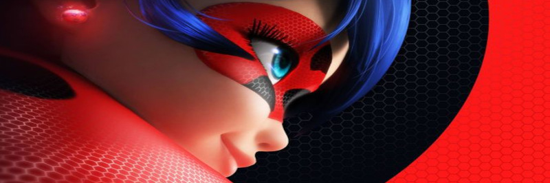
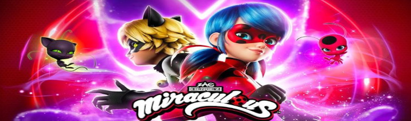
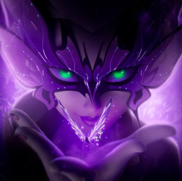

História e Teorias Recentes de Miraculous: As Aventuras de Ladybug
Desde o início, a trama gira em torno de Marinette Dupain-Cheng e Adrien Agreste, dois adolescentes que se transformam em Ladybug e Cat Noir usando joias mágicas chamadas Miraculous. Durante várias temporadas, o grande vilão foi Gabriel Agreste, que utilizava o poder do Miraculous da Borboleta para criar vilões akumatizados com o objetivo de alcançar seu maior desejo. A quinta temporada marcou o ponto mais alto desse conflito, trazendo revelações importantes sobre o passado de Gabriel, o destino de sua esposa e o verdadeiro custo de seus desejos.
O primeiro Desafio
Ao longo das primeiras temporadas, eles enfrentam desafios maiores, descobrem aliados e mistérios sobre os próprios poderes, até que seu inimigo se torna tão forte que rouba quase todos os Miraculous, forçando a dupla a lutar pela esperança e pelo futuro. No fim da 5ª temporada, Monarch tem sua virada emocional, Marinette e Adrien começam a namorar e Marinette conta a maior mentira de sua vida, que o vilão que enfrentou era um heroi e com isso mas novos conflitos e segredos ainda estão por vir.

O confronto final trouxe consequências permanentes para o universo da série, encerrando um ciclo que vinha sendo construído desde o primeiro episódio.
Surge uma nova fase
Com o encerramento da quinta temporada, a história entrou em uma nova etapa. A sexta temporada apresenta um mundo transformado pelas escolhas feitas anteriormente.

Agora, os personagens precisam lidar com as consequências emocionais e sociais dos acontecimentos passados. Novas ameaças começam a surgir, e o equilíbrio entre identidade secreta e vida pessoal se torna ainda mais delicado.

Essa nova fase levanta diversas teorias entre os fãs:
- Qual será o futuro do desenho?
- Como as consequências das ações do passado afetará o desenho?
- Quem realmente é crysalis e qual é sua historia?